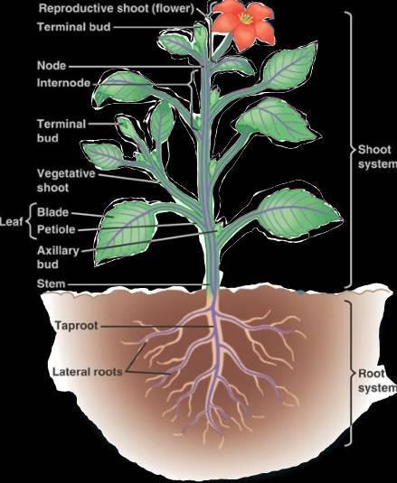
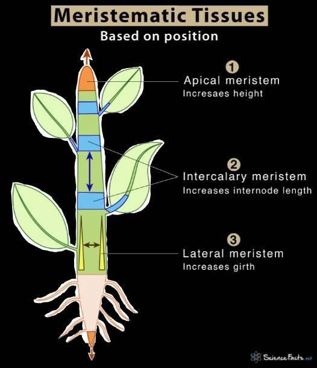
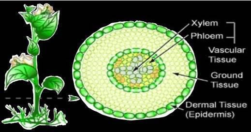
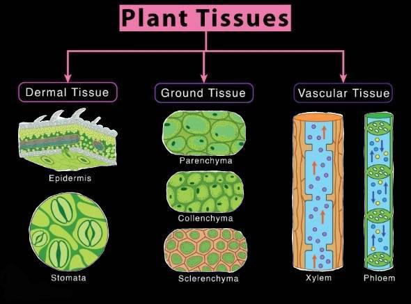

This lesson will talk about the vegetative organs of a flowering plant. The structure of the reproductive organs will be discussed in the -Plant reproduction- lesson.
Vascular Plant Organs
- The root is the organ that anchors the plant in the soil and absorbs water and minerals from the soil, and it often stores carbohydrates.
- The primary root is the first one that evolves from the germinating seed, and the taproot (main vertical root) will form from it. This type of root has a very important role in anchoring plants, thereby it facilitates plant growth in height. The taproot will branch to form lateral roots, which stem from the part called pericycle.
- In small vascular plants (such as most monocots), or in those that have a trailing growth, the primary root dies early on and from it many small roots emerge which will each form lateral roots, and, furthermore, these lateral roots will also branch again and so on. This type of root system is called a fibrous root system.
- Roots possess structures which enhance the absorption of water and minerals, called root hairs. They are found near the tips of elongating roots, and they increase the surface area of the root. Many root systems are also helped by soil fungi, forming a mycorrhizal association, which again increases the plant’s ability of absorption from soil.
- The stem is the organ that bears leaves and buds. Its main function is to facilitate the transport of substances through the whole plant. Green stems can sometimes have a limited role in photosynthesis as well.
- Each system is composed of nodes (where leaves are attached) and internodes (regions between nodes). A stem grows mostly from its apical bud, which is its growing tip. There are also axillary buds from which branches, flowers or thorns can form. Some plants have stems called rhizomes, stolons or tubers which pose an important role in food storage or asexual reproduction, and are often confused as roots as they are underground.
- The leaf is the main photosynthetic organ by intercepting light and exchanging gases. It consists of the blade and the petiole (which links the leaf to the stem at a node).
- The leaves of monocots have almost parallel main veins that run across the blade. Eudicots have one central main vein from which branched veins start. Leaves can be simple or compound (with leaflets).

Types of Meristems
- Meristems are undifferentiated tissues that contain cells with the ability of division, therefore, a plant can grow even during its adult life, a process called indeterminate growth. However, organs such as leaves, thorns and flowers go through determinate growth, meaning that at one point they stop growing. This will be further explained in the -Plant Growth and Development- lesson.
- There are two main types of meristems: primary (apical and intercalary), which have the role of length growth, and secondary (lateral), which have the role of circumference growth.
- Apical meristems, a type of primary meristematic tissue, are located at the growing tips (of roots and shoot) allowing the plant to grow in length (this is the primary growth of the plant), so as for roots to extend through the soil for a better absorption and for the whole plant to be favourably exposed to light and air. Apical meristems represent all the meristems in herbaceous plants.
- Intercalary meristems, a type of primary meristematic tissue, are located at the base of monocot nodes and leaf blades. These also aid in the plant’s length growth.
- Lateral meristems, a type of secondary meristematic tissue, are found in woody plants, giving them the ability to grow in circumference. These are represented by the vascular cambium (which adds vascular tissue - secondary xylem and secondary phloem) and the cork cambium (which replaces the epidermis with the periderm).
- The additional cells formed through the division of the meristems can either be displaced from the meristem (these can divide a few more times and during primary growth, they create primary meristems - protoderm, ground meristem and procambium) or they can remain there and will divide further (these are called initials or stem cells). Lateral meristems also have stem cells.
- From the division of meristems, all types of differentiated tissues (which will be explained in the next part of this lesson) will be formed as the plant grows.

Plant Tissues
- Roots, stems, leaves are all made up of three fundamental types of tissues: dermal, vascular and ground tissues. Each of these form a tissue system throughout the whole plant.
- Dermal tissue serves as the outer protective covering of the plant and its main roles are protection against physical damage and pathogens. In nonwoody plants, there is a single layer of cells called the epidermis which is covered by the cuticle (in leaves and stems) to prevent water loss. In woody plants, the epidermis is replaced by the periderm in older regions of stems and roots. In roots, the absorption of water and minerals happens through the dermal tissue. The leaves present stomata cells, their main role being gaseous exchange.
- Vascular tissue has the roles of transport and mechanical support. There are two types of vascular tissues: xylem (conducts water and minerals) and phloem (conducts sugars formed through photosynthesis). In angiosperms, in the root, the vascular tissue is gathered together in the center, forming a central vascular cylinder of both phloem and xylem, while in the stems and leaves, they form vascular bundles.
- Ground tissue is basically any other kind of tissue that is not dermal or vascular. If it is internal to the vascular tissue it's called pith, if it is external to the vascular tissue it is called cortex.

Types of Differentiated Plant Cells
- Now we are going to learn about the different types of cells that make up the tissues explained above.
- Parenchyma cells - have primary walls that are thin and flexible, but lack a secondary wall. They contain a large central vacuole. They are the most important cells in metabolic processes as photosynthesis happens inside them. Some contain colourless plastids called amyloplasts that store starch. They retain the ability to divide and differentiate under particular conditions.
- Collenchyma cells - support young parts of the plant shoot (stems+leaves) (often found in young stems and petioles). They are elongated cells with a thicker primary wall, although they are unevenly thickened. They provide flexible support without resisting growth.
- Sclerenchyma cells - also support elements of the plant, but they are more rigid than the previous cells. Their secondary cell wall is thick and contains a lot of lignin (strengthening polymer that makes up a quarter of the dry wood mass). They are located in regions of the plant that stopped growing, as they do not elongate. These cells are so specialized for support that many die soon after producing the secondary cell wall. There are two types - sclereids (boxier and irregular in shape, have very thick, lignified secondary walls, are found in nutshells and seed coats) and fibers (usually grouped in strands, are long, slender and tapered).
- Xylem cells - two types: tracheids (in the xylem of all vascular plants) and vessel elements (in most angiosperms, a few gymnosperms and a few seedless vascular plants), they are both tubular, elongated cells that are dead and lignified. Their secondary walls are often interrupted by pits (regions where there is only the primary wall through which water leaves the vessel to the neighbouring cells). Tracheids are long, thin cells with tapered ends. Vessel elements are wider, shorter, thinner walled and less tapered than tracheids, aligned end to end forming vessels, with each end perforated to allow water to move freely through them.
- Phloem cells - they are alive. In seedless vascular plants and gymnosperms, sugars are transported through long, narrow cells called sieve cells. In angiosperms, nutrients are transported through sieve tubes which are made out of sieve-tube elements. They lack a nucleus, ribosomes, a distinct vacuole and cytoskeletal elements, making it easier for the nutrients to pass through them. Their end walls are called sieve plates and they have pores that facilitate this transport. Each phloem cell is accompanied by a companion cell which it communicates with through plasmodesmata, and these cells will sometimes help load sugars in the sieve-tube cells.

Written by Bianca Buzas